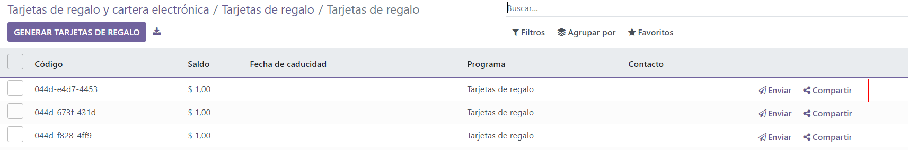

Usar monederos electrónicos y tarjetas de regalo¶
En Odoo, los clientes pueden utilizar monederos electrónicos y tarjetas de regalo para realizar compras en línea o en la tienda física.
Para habilitar el uso de monederos electrónicos y tarjetas de regalo en las aplicaciones Comercio electrónico y Punto de venta (PdV), primero habilite la función descuentos, lealtad y tarjetas de regalo en . Una vez habilitada, vaya a la aplicación y cree un nuevo programa de monederos electrónicos o tarjetas de regalo.
Monederos electrónicos¶
Los monederos electrónicos permiten que los clientes guarden créditos en su cuenta en línea y los utilicen como método de pago al comprar artículos en tiendas físicas o en línea. También puede usar la función de monederos electrónicos para centralizar varias tarjetas de regalo.
Antes de crear un programa de monederos electrónicos, debe crear un producto de recarga de monedero electrónico. Las recargas son créditos digitales predefinidos que se agregan a un monedero electrónico a cambio de su equivalente en la divisa real. Estos créditos se pueden utilizar como método de pago en la tienda de comercio electrónico o en el PdV. Las recargas pueden ser de distintos importes.
Example
Se puede comprar una recarga de $50 por $50 en físico. Esto agrega el mismo importe en créditos al monedero electrónico.
Para crear un producto de recarga vaya a y cree un nuevo producto. Configure las opciones en la plantilla de producto como se indica a continuación:
Nombre de producto: agregue un nombre para el producto de recarga (por ejemplo,
Recarga de $50).Se puede vender: debe estar habilitado.
Tipo de producto: seleccione servicio.
Política de facturación: seleccione precio fijo o de prepago.
Crear en la orden: seleccione nada.
Precio de venta: introduzca el importe de la recarga.
Nota
Para tener recargas de distintos importes para los monederos electrónicos, cree varios productos de recarga y modifique el precio de venta.
Una vez que cree la recarga, vaya a para crear un programa de monederos electrónicos. Las siguientes opciones de configuración están disponibles:
Nombre del programa: escriba un nombre para el programa de monedero electrónico.
Tipo de programa: seleccione monedero electrónico.
Productos de monedero electrónico: seleccione la recarga de monedero electrónico que creó con anterioridad. Repita el proceso si creó recargas de distintos importes.
Plantilla de correo: seleccione la plantilla que se utilizará para enviar un correo electrónico al cliente. Para crear una nueva plantilla, haga clic en el campo, seleccione Buscar más y después en Nuevo.
Divisa: seleccione la divisa que se utilizará en el programa de monedero electrónico.
Empresa: seleccione la empresa para la que el programa es válido y se encuentra disponible.
Disponible en: seleccione las aplicaciones en las que el programa es válido y se encuentra disponible.
Sitio web: seleccione el sitio web en el que el programa es válido y se encuentra disponible. Deje este campo vacío para incluir todos los sitios web.
Punto de venta: seleccione el punto de venta en el que el programa es válido y se encuentra disponible. Deje este campo vacío para incluir todos los PdV.
Una vez que el programa se encuentra configurado, haga clic en el botón Generar monedero electrónico en la esquina superior izquierda para generarlos. Estos se pueden generar por clientes o las etiquetas de cliente y la cantidad se adapta de manera automática según lo que haya seleccionado. Luego, establezca el valor del monedero electrónico y por ultimo establezca el período Válido hasta si aplica.
Puede acceder a los monederos electrónicos generados a través del botón inteligente Monederos electrónicos en la esquina superior derecha. Allí puede enviar o compartir los monederos por correo electrónico o un enlace URL.
Haga clic en un monedero electrónico para cambiar la fecha de vencimiento, contacto o saldo. El código de un monedero electrónico no se puede modificar, eliminar o duplicar.
Tarjetas de regalo¶
Los clientes pueden comprar tarjetas de regalo y utilizarlas como método de pago en una tienda de comercio electrónico o un punto de venta.
Antes de crear un nuevo programa de tarjetas de regalo, es necesario crearlas como productos. Para hacerlo, vaya a y haga clic en Nuevo para crear uno. En la plantilla de producto, configure las opciones de la siguiente manera:
Nombre del producto: escriba un nombre para el producto de tarjeta de regalo.
Se puede vender: debe estar habilitado.
Tipo de producto: seleccione servicio.
Política de facturación: seleccione precio fijo o de prepago.
Crear en la orden: seleccione nada.
Precio de venta: escriba el importe de la tarjeta de regalo.
Nota
Para tener tarjetas de regalo con distintos importes, cree varias tarjetas de regalo y modifique el precio de venta.
Una vez que cree la tarjeta de regalo, vaya a para crear un programa de tarjetas de regalo. Están disponibles las siguientes opciones de configuración:
Nombre del programa: escriba un nombre para el programa de tarjeta de regalo.
Tipo de programa: seleccione tarjeta de regalo.
Productos de tarjeta de regalo: seleccione la tarjeta de regalo que creó con anterioridad. Repita el proceso si creó tarjetas de regalo de distintos importes.
Plantilla de correo: seleccione la plantilla predeterminada Tarjeta de regalo: Información de la tarjeta de regalo o cree una nueva plantilla. Haga clic en el campo, seleccione Buscar más y después haga clic en Nuevo.
Imprimir reporte: seleccione Tarjeta de regalo.
Divisa: seleccione la divisa que se utilizará en el programa de tarjeta de regalo.
Empresa: seleccione la empresa para la que el programa es válido y se encuentra disponible.
Disponible en: seleccione las aplicaciones en las que el programa es válido y se encuentra disponible.
Sitio web: seleccione el sitio web en el que el programa es válido y se encuentra disponible. Deje este campo vacío para incluir todos los sitios web.
Punto de venta: seleccione el punto de venta en el que el programa es válido y se encuentra disponible. Deje este campo vacío para incluir todos los PdV.
Una vez que el programa se encuentra configurado, haga clic en el botón Generar tarjetas de regalo en la esquina superior izquierda. Las tarjetas de regalo se pueden generar para clientes anónimos o clientes seleccionados. Establezca la cantidad a generar para clientes anónimos, o seleccione clientes o etiquetas de cliente para los clientes seleccionados. Luego, establezca el valor de la tarjeta de regalo, y por último el período en Válido hasta si aplica.
Puede acceder a las tarjetas de regalo generadas a través del botón inteligente Tarjetas de regalo en la esquina superior derecha. Desde allí, puede enviar o compartir las tarjetas de regalo por correo electrónico o un enlace URL.
Haga clic en una tarjeta de regalo para cambiar la fecha de vencimiento, contacto o saldo. El código de una tarjeta de regalo no se puede modificar, eliminar o duplicar.